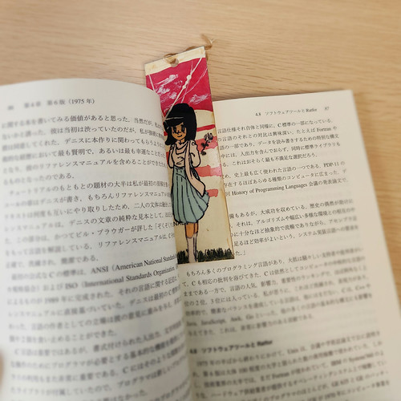

『カーニハンのUNIX回顧録』はインターネット老人ホイホイか — オンライン読書会第3回目

あらかじめ予防線を張っておくと，私の中で「インターネット老人」はインターネット商用化1 以前からのユーザを指す。 故に私はインターネット老人ではない（笑） 1996年に最初の ISP と契約するまでは「パソコン通信」の人だったから。 異論・反論は認めるけど譲らない。
ようやく『カーニハンのUNIX回顧録』オンライン読書会に参加できた
昨年末に骨折入試して以来，初めてのオンライン読書会参加だよ。 思えばここまで長かった。
版元には電子版があると書いてあるが PDF をダウンロードさせてくれるわけではなさそうなので，諦めて紙の本を買った（Kindle 版は読書会，特に輪読には不向き）。 紙の本はマーキングしづらいので栞が要るなぁ，と思ったが，予備の栞がこれしかなかった。

中二病を患ってた頃を思い出すので封印していたのだが（でも捨てられない）しょうがない。 らでんちゃんの栞は完売かぁ…
今回は第5章の前半部分。 第5章は UNIX V7 が登場する1979年あたりまでの話が中心らしい。
V7 の大きな特徴のひとつは移植可能な OS になったということ。
それまでは汎用機の歴史で必ず登場する PDP-11 専用の OS だったのだ。
個々のアプリケーションについては sh (Bourne shell) や yacc, lex, make といったツールが登場する。
troff のプリプロセッサである eqn が TeX の数式モードの着想に影響を与えてるという話は面白かった。
この辺の話を読んでいると「また自分でツールを作りたい」って気分になるのが不思議だ。
後に「あれはパラダイムシフトだった」と思えるような出来事の前後には，大きな変化に対するワクワクするような高揚感がある。 生成 AI もパラダイムシフトだと私は思うけど（生成 AI 以前には戻れない），今の若い人たちはこの変化にワクワクできているだろうか。 ただ眼の前にあるものを消費するだけではつまらないだろう？ それともこの感覚は老人特有の懐古（回顧ではない）なのか？
AI は負債も加速させる
オンライン読書会後の雑談より。 あまり細かいところまでは書けないが，個人的に印象に残った部分を箇条書きで挙げてみる。
- 最近は自前で殆どコードを書いてない，という話が起点
- AI にコードを書かせながらやり取りする。テストやリファクタリングも指示をするだけ
- Claude Code を使っているが無料版はほぼ使い物にならないので 100USD/月 (Max plan) を払っている。円安のバカヤロー
- 詳細な仕様を書いていけば，ほぼ問題なくコードを書いてくれる。リファクタリング指示も同様
- AI は開発スピードを加速させる
- 間違いや不合理な部分をちゃんと指摘して AI を使って改善させるサイクルを加速させる（AI は所詮道具）
- SIer はそのスピード感だけを評価して「AI は生産性が高い」と評価しがち
- AI を使って一人のエンジニアがタスクを並行に走らせることは本当に合理的なのか？
- AI は世の中に既にあるものを提示してるだけなので AI に従うだけでは（エンジニアとしては）何も身につかない
- 「何が分からないか分からない」場合は AI が最初のとっかりになり得る。便利（← それは SIer の仕事？）
- AI の間違いや不合理な実装に人間が気づかず進めてしまうことで「負債」も加速してしまう
- AI からのアウトプットに違和感を覚えるか否かが分かれ目
- シニアエンジニアは長年手作業で書いてきた膨大なコードの経験からそれを察知できる
- 最初から AI にコードを書かせる若い人は，その感覚をどうやってそれを習得するのか
- 「年寄り」の経験は若い人にはあまり役に立たない？
まぁ，こんな感じ。 特に「AI は負債も加速させる」という指摘はシビレた。 確かにそのとおり。
今って私，休暇中なんだけど，世の中が急激に変わってしまって，ちゃんと社会復帰できるのだろうか。 いくら便利だからって個人で AI 利用に 100USD/月 も払うのはちょっとなぁ。 仕事ならペイできるんだろうけど。
-
ここでは NSFNET が終了した1995年を「インターネット商用化」の目安としている。厳密に言うと世界初の商用インターネット・サービスプロバイダ PSINet が設立されたのが1989年なので，そこまでは遡れるかも知れない。インターネットの歴史については JPNIC の「インターネット歴史年表」が参考になる。 ↩︎